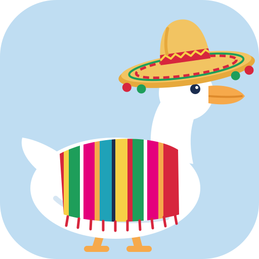

Druckfertig
PDFs für zu Hause (A4 oder Letter) und für die Druckerei mit Beschnitt – dazu ein Prüfbogen vor dem Drucken.

Me Goos-ta DeutschKostenlos · Open Source · Läuft offline
Me Goos-ta Deutsch macht aus deinen Gänse-Wortspiel-Bildern Lernkarten – zum Ausdrucken oder zum Lernen am Bildschirm, mit Wiederholung nach FSRS und Rückseiten in 15 Sprachen. Alles läuft auf deinem eigenen Rechner.
Ein Paket für Windows, macOS und Linux – eine ZIP-Datei, kein Installer, kein Konto.
Laden, entpacken, doppelklicken – den Rest erledigt die Gans.
Rechtsklick auf die heruntergeladene ZIP-Datei → Eigenschaften → unten Zulassen anhaken → OK. So lässt die Intelligente App-Steuerung (Smart App Control) die Startdatei durch. Kein Kästchen da? Dann einfach weiter.
Rechtsklick auf die ZIP-Datei → Alle extrahieren … → Extrahieren, zum Beispiel nach „Dokumente“. Der Ordner wird deine Gänse-Werkstatt für Bilder und PDFs.
Doppelklick auf Me Goos-ta Deutsch - Windows. Der erste Start richtet alles selbst ein (3–10 Minuten, ca. 90 MB, ohne Administratorrechte), dann öffnet sich das Programm im Browser. Ab dann startet es in Sekunden über das Desktop-Symbol.
„Der Computer wurde durch Windows geschützt“ → Weitere Informationen → Trotzdem ausführen.
„Intelligente App-Steuerung … blockiert“ → Schritt 1 wurde ausgelassen: Rechtsklick auf Me Goos-ta Deutsch - Windows → Eigenschaften → Zulassen → OK, dann erneut doppelklicken.
Doppelklick auf die ZIP-Datei – Safari entpackt sie oft schon selbst. Den Ordner dann nach „Dokumente“ ziehen.
Doppelklick auf Me Goos-ta Deutsch - Mac. Kann macOS den Entwickler nicht überprüfen: ab macOS 15 Systemeinstellungen → Datenschutz & Sicherheit → Dennoch öffnen; bis macOS 14 Control-Klick auf die Datei → Öffnen.
Alles richtet sich selbst ein (Terminal-Fenster offen lassen, 3–10 Minuten, ca. 90 MB), dann öffnet sich das Programm im Browser. Danach findest du Me Goos-ta Deutsch im Launchpad – gern ins Dock ziehen.
Apple winkt nur Apps von kostenpflichtigen Entwicklerkonten einfach durch. Me Goos-ta Deutsch ist kostenlos und Open Source, darum fragt macOS einmal nach. Klappt immer: Programm „Terminal“ öffnen, sh und ein Leerzeichen tippen, die Startdatei ins Fenster ziehen, Eingabetaste. Fragt macOS nach Zugriff auf „Downloads“ oder „Dokumente“: Erlauben.
Die ZIP-Datei im Dateimanager entpacken (Rechtsklick → Hier entpacken) und den Ordner nach „Dokumente“ legen.
Im Ordner ein Terminal öffnen (Rechtsklick → Im Terminal öffnen) und sh "Me Goos-ta Deutsch - Linux.sh" eingeben – oder Rechtsklick auf die Datei → Als Programm ausführen.
Alles richtet sich selbst ein (Terminal offen lassen, 3–10 Minuten, ca. 90 MB), dann öffnet sich das Programm im Browser. Danach steht es im Anwendungsmenü.
Läuft auf den üblichen Systemen (Ubuntu, Debian, Mint, Fedora, openSUSE, Arch …) mit Intel/AMD- oder ARM-Prozessor. Gebraucht werden nur curl oder wget und tar – die sind fast immer schon da.
PDFs für zu Hause (A4 oder Letter) und für die Druckerei mit Beschnitt – dazu ein Prüfbogen vor dem Drucken.
Üben direkt im Programm mit Wiederholung nach FSRS-6 (wie Anki). Dein Lernstand bleibt.
Hinten Spanisch – oder Englisch, Französisch, Japanisch, Arabisch und zehn weitere, jede ein kleiner Download nach Wunsch.
Bildverbesserung, Übersetzungsvorschläge und KI-Gänse offline – geladen nur, wenn du sie willst.
Android, iPhone und Google Pixel: dasselbe Programm als App, die auch offline läuft.
Kein Konto, keine Werbung, kein Tracking. Karten und Bilder verlassen deinen Rechner nie.
Die Handy-App ist dasselbe Programm für Android, iPhone/iPad (ab iOS 16.4) und Google Pixel – direkt aus dem Browser installiert, ohne App-Store, auch offline.
https://lukasdiegans.github.io/me-goos-ta-deutsch/
Mit der Handy-Kamera scannen
Gans sicher. Me Goos-ta Deutsch ist Open Source unter der MIT-Lizenz – jede Zeile steht auf GitHub. Die ZIP-Datei enthält keinen Installer und keine versteckten Extras. Beim ersten Start lädt sie nur Python und Pakete aus den offiziellen Quellen (python.org, pypi.org, github.com) und prüft jede Datei per Prüfsumme. Die SHA-256 der ZIP-Datei kannst du mit dem Wert unten vergleichen.
Windows und macOS sind vorsichtig bei Programmen aus dem Internet, die kein kostenpflichtiges Entwicklerzertifikat tragen. Eine gute Gewohnheit – und hier kein Grund zur Sorge: einmal zulassen (Windows) bzw. „Dennoch öffnen“ (macOS), und die Gans watschelt los.
Windows 10 oder 11 (64 Bit, auch auf ARM), macOS auf Intel oder Apple Silicon oder ein übliches Linux auf Intel/AMD oder ARM. Etwa 700 MB freien Platz und einmal Internet für die Einrichtung (ca. 90 MB). Keine Administratorrechte, kein vorinstalliertes Python.
Ab Version 2.4 direkt im Programm: Werkzeuge → „Programm aktuell halten“ → „Nach neuer Version suchen“ (nur wenn du klickst, eine Anfrage an api.github.com, ohne Daten über dich oder deine Karten) → „Jetzt aktualisieren“ → „Jetzt neu starten“ – die neue Version kommt in denselben Ordner, Karten, Bilder, Einstellungen und Lernstand bleiben. Von älteren Versionen aus: neue ZIP-Datei laden, in einen neuen Ordner entpacken und die Startdatei doppelklicken – sie bietet an, alles zu übernehmen.
Im Programm erledigt der letzte Reiter Deinstallieren alles – und bietet vorher eine Sicherung deiner Karten an. Die Handy-App entfernst du wie jede andere App.
Die Datei SHA256SUMS.txt ist mit dem Schlüssel von Me Goos-ta Deutsch signiert (SHA256SUMS.txt.minisig, Schlüssel-ID 6885AC6ACBF317E0). Mit dem freien Werkzeug minisign prüfst du sie so: minisign -Vm SHA256SUMS.txt -P RWTgF/PLaqyFaOLbzuVu1f/n4Ym5ajtcWCm1zsQdvXugs6WwITJQaRz7 – danach die SHA-256 der ZIP-Datei mit dem Wert in SHA256SUMS.txt vergleichen (Windows: certutil -hashfile Me-Goos-ta-Deutsch-2.5.zip SHA256, macOS/Linux: shasum -a 256 Me-Goos-ta-Deutsch-2.5.zip). Das Programm prüft die Signatur vor jedem Update von selbst – Gans automatisch.
Deine Karten, Bilder und dein Lernstand bleiben bei dir – auf deinem Rechner bzw. im Speicher deines Handys. Kein Konto, keine Werbung, keine Statistik.
Gratis · Código abierto · Funciona sin conexión
Me Goos-ta Deutsch convierte tus imágenes con juegos de palabras de gansos en tarjetas: para imprimir o estudiar en pantalla, con repaso espaciado y reversos en 15 idiomas. Todo funciona en tu propia computadora.
Un solo paquete para Windows, macOS y Linux: un archivo ZIP, sin instalador y sin cuenta.
Descarga, descomprime, doble clic: el ganso hace el resto.
Clic derecho en el ZIP descargado → Propiedades → abajo marca Desbloquear → Aceptar. Así el Control inteligente de aplicaciones (Smart App Control) deja pasar el archivo de inicio. ¿No aparece la casilla? Entonces sigue adelante.
Clic derecho en el ZIP → Extraer todo … → Extraer, por ejemplo en «Documentos». Esa carpeta será tu taller de gansos para imágenes y PDF.
Doble clic en Me Goos-ta Deutsch - Windows. El primer inicio instala todo solo (3–10 minutos, unos 90 MB, sin permisos de administrador) y luego el programa se abre en el navegador. Desde entonces arranca en segundos con el icono del escritorio.
«Windows protegió su PC» → Más información → Ejecutar de todas formas.
«Control inteligente de aplicaciones … bloqueó» → se omitió el paso 1: clic derecho en Me Goos-ta Deutsch - Windows → Propiedades → Desbloquear → Aceptar, y vuelve a hacer doble clic.
Doble clic en el ZIP; Safari a menudo lo descomprime solo. Luego mueve la carpeta a «Documentos».
Doble clic en Me Goos-ta Deutsch - Mac. Si macOS no puede verificar al desarrollador: desde macOS 15 ve a Configuración del Sistema → Privacidad y seguridad → Abrir igualmente; hasta macOS 14, Control-clic en el archivo → Abrir.
Todo se instala solo (deja abierta la ventana de Terminal, 3–10 minutos, unos 90 MB) y luego el programa se abre en el navegador. Después encontrarás Me Goos-ta Deutsch en Launchpad; puedes arrastrarlo al Dock.
Apple solo deja pasar sin preguntar las apps de cuentas de desarrollador de pago. Me Goos-ta Deutsch es gratis y de código abierto, por eso macOS pregunta una vez. Siempre funciona: abre la app «Terminal», escribe sh y un espacio, arrastra el archivo de inicio a la ventana y pulsa Intro. Si macOS pide acceso a «Descargas» o «Documentos»: Permitir.
Descomprime el ZIP en el administrador de archivos (clic derecho → Extraer aquí) y mueve la carpeta a «Documentos».
Abre una terminal en la carpeta (clic derecho → Abrir en una terminal) y escribe sh "Me Goos-ta Deutsch - Linux.sh", o clic derecho en el archivo → Ejecutar como un programa.
Todo se instala solo (deja la terminal abierta, 3–10 minutos, unos 90 MB) y luego el programa se abre en el navegador. Después está en tu menú de aplicaciones.
Funciona en las distribuciones habituales (Ubuntu, Debian, Mint, Fedora, openSUSE, Arch …) con procesador Intel/AMD o ARM. Solo necesita curl o wget y tar, que casi siempre ya están.
PDF para casa (A4 o carta) y para imprenta con sangrado, más una hoja de revisión antes de imprimir.
Estudia en el programa con repaso espaciado FSRS-6 (como Anki). Tu avance se guarda.
Español en el reverso, o inglés, francés, japonés, árabe y diez más; cada uno es una pequeña descarga opcional.
Mejora de imagen, sugerencias de traducción y gansos con IA sin conexión: se descargan solo si los quieres.
Android, iPhone y Google Pixel: el mismo programa como app que funciona sin conexión.
Sin cuenta, sin anuncios, sin rastreo. Tus cartas e imágenes nunca salen de tu computadora.
La app para celular es el mismo programa para Android, iPhone/iPad (desde iOS 16.4) y Google Pixel: se instala desde el navegador, sin tienda de apps, y funciona sin conexión.
https://lukasdiegans.github.io/me-goos-ta-deutsch/
Escanéalo con la cámara del celular
Sí. Me Goos-ta Deutsch es de código abierto con licencia MIT: cada línea está en GitHub. El ZIP no trae instalador ni extras ocultos. En el primer inicio solo descarga Python y paquetes de las fuentes oficiales (python.org, pypi.org, github.com) y revisa cada archivo con su suma de verificación. Puedes comparar el SHA-256 del ZIP con el valor de abajo.
Windows y macOS son precavidos con programas de internet que no traen un certificado de desarrollador de pago. Es una buena costumbre, y aquí no hay de qué preocuparse: desbloquéalo una vez (Windows) o elige «Abrir igualmente» (macOS) y el ganso echa a andar.
Windows 10 u 11 (64 bits, también en ARM), macOS en Intel o Apple silicon, o un Linux común en Intel/AMD o ARM. Unos 700 MB libres e internet una vez para la instalación (unos 90 MB). Sin permisos de administrador y sin Python instalado antes.
Desde la versión 2.4, dentro del programa: Herramientas → «Mantener el programa al día» → «Buscar una versión nueva» (solo al hacer clic, una consulta a api.github.com, sin datos sobre ti ni tus cartas) → «Actualizar ahora» → «Reiniciar ahora»: la versión nueva va a la misma carpeta y tus cartas, imágenes, ajustes y avance se quedan. Desde versiones anteriores: descarga el ZIP nuevo, descomprímelo en una carpeta nueva y haz doble clic en el archivo de inicio; ofrece pasarlo todo.
En el programa, la última pestaña Desinstalar lo hace todo y antes te ofrece respaldar tus cartas. La app para celular se quita como cualquier otra app.
El archivo SHA256SUMS.txt está firmado con la clave de Me Goos-ta Deutsch (SHA256SUMS.txt.minisig, ID de clave 6885AC6ACBF317E0). Con la herramienta gratuita minisign lo compruebas así: minisign -Vm SHA256SUMS.txt -P RWTgF/PLaqyFaOLbzuVu1f/n4Ym5ajtcWCm1zsQdvXugs6WwITJQaRz7; después compara el SHA-256 del ZIP con el valor de SHA256SUMS.txt (Windows: certutil -hashfile Me-Goos-ta-Deutsch-2.5.zip SHA256, macOS/Linux: shasum -a 256 Me-Goos-ta-Deutsch-2.5.zip). El programa revisa la firma solo, antes de cada actualización.
Tus cartas, imágenes y tu progreso se quedan contigo: en tu computadora o en la memoria de tu celular. Sin cuenta, sin publicidad, sin estadísticas.
Free · Open source · Works offline
Me Goos-ta Deutsch turns your goose-pun pictures into flash cards – ready to print or to study on screen, with spaced repetition and back sides in 15 languages. Everything runs on your own computer.
One package for Windows, macOS and Linux – a ZIP file, no installer, no account.
Download, extract, double-click – the goose does the rest.
Right-click the downloaded ZIP → Properties → tick Unblock at the bottom → OK. That way Smart App Control lets the start file through. No box there? Then just carry on.
Right-click the ZIP → Extract All … → Extract, for example into “Documents”. This folder becomes your goose workshop for pictures and PDFs.
Double-click Me Goos-ta Deutsch - Windows. The first start sets everything up by itself (3–10 minutes, about 90 MB, no administrator rights), then the program opens in your browser. From then on the desktop icon starts it in seconds.
“Windows protected your PC” → More info → Run anyway.
“Smart App Control blocked …” → step 1 was skipped: right-click Me Goos-ta Deutsch - Windows → Properties → Unblock → OK, then double-click again.
Double-click the ZIP – Safari often extracts it for you. Then move the folder to “Documents”.
Double-click Me Goos-ta Deutsch - Mac. If macOS can’t verify the developer: on macOS 15 and later go to System Settings → Privacy & Security → Open Anyway; up to macOS 14 Control-click the file → Open.
Everything sets itself up (keep the Terminal window open, 3–10 minutes, about 90 MB), then the program opens in your browser. Afterwards you’ll find Me Goos-ta Deutsch in Launchpad – feel free to drag it into the Dock.
Apple only waves through apps from paid developer accounts. Me Goos-ta Deutsch is free and open source, so macOS asks once. Always works: open the Terminal app, type sh and a space, drag the start file into the window and press Return. If macOS asks for access to “Downloads” or “Documents”: Allow.
Extract the ZIP in your file manager (right-click → Extract Here) and move the folder to “Documents”.
Open a terminal in the folder (right-click → Open in Terminal) and type sh "Me Goos-ta Deutsch - Linux.sh" – or right-click the file → Run as a Program.
Everything sets itself up (keep the terminal open, 3–10 minutes, about 90 MB), then the program opens in your browser. Afterwards it’s in your application menu.
Runs on the usual distributions (Ubuntu, Debian, Mint, Fedora, openSUSE, Arch …) with Intel/AMD or ARM processors. All it needs is curl or wget and tar – almost always there already.
PDFs for home (A4 or Letter) and for print shops with bleed – plus a proof sheet before you press print.
Study right in the program with spaced repetition (FSRS-6, like Anki). Your progress is kept.
Spanish on the back – or English, French, Japanese, Arabic and ten more, each a small optional download.
Image enhancement, translation suggestions and offline AI geese – downloaded only when you want them.
Android, iPhone and Google Pixel: the same program as an app that works offline.
No account, no ads, no tracking. Your cards and pictures never leave your computer.
The phone app is the same program for Android, iPhone/iPad (iOS 16.4 or later) and Google Pixel – installed straight from the browser, no app store, works offline.
https://lukasdiegans.github.io/me-goos-ta-deutsch/
Scan with your phone’s camera
Yes. Me Goos-ta Deutsch is open source under the MIT license – every line is on GitHub. The ZIP holds no installer and no hidden extras. On the first start it only fetches Python and packages from the official sources (python.org, pypi.org, github.com) and checks every file by checksum. You can compare the ZIP’s SHA-256 with the value below.
Windows and macOS are cautious with programs from the internet that don’t carry a paid developer certificate. A good habit – and no reason to worry here: unblock once (Windows) or choose “Open Anyway” (macOS), and the goose is on its way.
Windows 10 or 11 (64-bit, also on ARM), macOS on Intel or Apple silicon, or a common Linux on Intel/AMD or ARM. About 700 MB of free space and internet once for the setup (about 90 MB). No administrator rights and no Python needed beforehand.
From version 2.4 on, right inside the program: Tools → “Keep the program up to date” → “Check for a new version” (only when you click, one request to api.github.com, with no data about you or your cards) → “Update now” → “Restart now” – the new version goes into the same folder, and your cards, pictures, settings and learning progress stay. From older versions: download the new ZIP, extract it into a new folder and double-click the start file – it offers to take everything over.
In the program, the last tab Uninstall does it all – and offers to back up your cards first. The phone app goes like any other app.
The file SHA256SUMS.txt is signed with the Me Goos-ta Deutsch key (SHA256SUMS.txt.minisig, key ID 6885AC6ACBF317E0). With the free tool minisign you check it like this: minisign -Vm SHA256SUMS.txt -P RWTgF/PLaqyFaOLbzuVu1f/n4Ym5ajtcWCm1zsQdvXugs6WwITJQaRz7 – then compare the SHA-256 of the ZIP with the value in SHA256SUMS.txt (Windows: certutil -hashfile Me-Goos-ta-Deutsch-2.5.zip SHA256, macOS/Linux: shasum -a 256 Me-Goos-ta-Deutsch-2.5.zip). The program checks the signature by itself before every update – no extra step needed.
Your cards, images and learning progress stay with you – on your computer or in your phone’s storage. No account, no ads, no statistics.